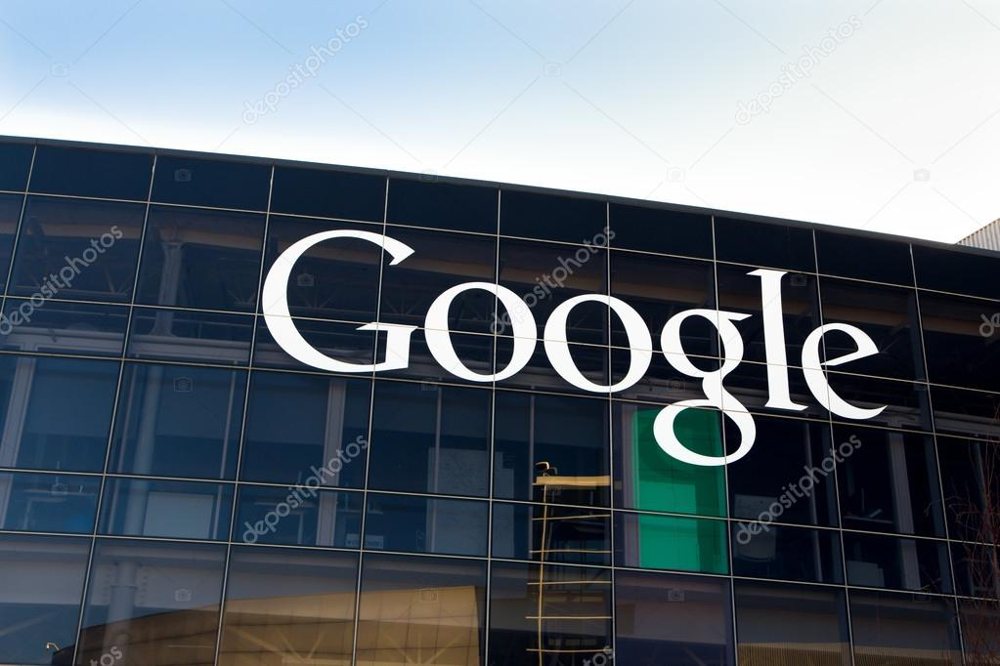

Bem-vindos à história do Google, uma jornada que começou nos corredores da Universidade Stanford, onde dois estudantes brilhantes, Larry Page e Sergey Brin, compartilhavam uma visão audaciosa: organizar o vasto oceano de informações da internet. Tudo começou em 1996, quando, como jovens visionários, criamos um mecanismo de busca chamado "Backrub". Movidos pela paixão por desafios complexos, refinamos nossa abordagem e, dois anos depois, em 1998, oficialmente fundamos o Google. O nome, inspirado no termo matemático "googol", reflete nosso objetivo de lidar com uma quantidade virtualmente infinita de dados. Com o lançamento do Google Search, rapidamente ganhamos reconhecimento por nossa capacidade única de oferecer resultados precisos e relevantes. Nosso algoritmo revolucionário, o PageRank, tornou-se a espinha dorsal da internet, guiando os usuários pelo labirinto digital com eficiência e confiabilidade sem precedentes. Mas não paramos por aí. Movidos pela inovação, expandimos nosso império digital com produtos como o Gmail, Google Maps e Google Drive, tornando-nos parte integrante da vida cotidiana de bilhões de pessoas em todo o mundo. Nosso compromisso com a excelência tecnológica nos levou além dos limites da busca na web, explorando campos como inteligência artificial, veículos autônomos e saúde. Em 2004, demos o próximo passo em nossa jornada ao abrir nosso capital, compartilhando nossa visão com o mundo e capacitando uma nova geração de sonhadores e inovadores. Desde então, continuamos a liderar o caminho da inovação, guiados por nossa missão de organizar as informações do mundo e torná-las universalmente acessíveis e úteis para todos. Enquanto avançamos para o futuro, permanecemos firmes em nossa crença de que, com criatividade, determinação e um toque de ousadia, podemos moldar um mundo onde todas as perguntas tenham uma resposta e todas as possibilidades se tornem realidade. Esta é a história do Google - e estamos apenas começando.
1- Motor de Busca Revolucionário: A Google começou como um projeto de pesquisa de dois estudantes de doutorado, Larry Page e Sergey Brin, na Universidade Stanford. Em 1998, eles lançaram o Google Search, que rapidamente se tornou o principal motor de busca da internet, revolucionando a forma como as pessoas acessam informações online.
2- Algoritmos de Classificação Avançados: A Google desenvolveu algoritmos complexos, como o PageRank, que revolucionaram a eficácia dos motores de busca, tornando o Google Search líder em precisão e relevância.
3- Plataforma de Publicidade Online: A introdução do Google AdWords em 2000 permitiu que empresas de todos os tamanhos alcançassem seu público-alvo de forma altamente segmentada e eficaz, transformando a publicidade online e impulsionando a receita da empresa.
